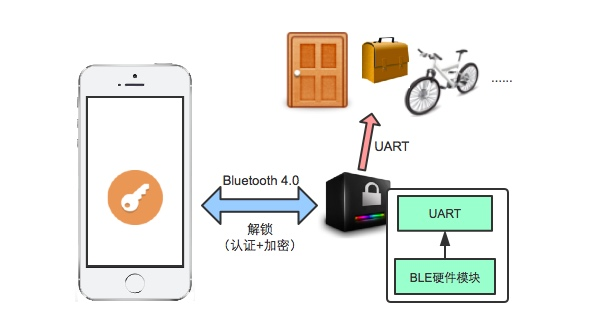

智能蓝牙门锁，淘汰古老的钥匙吧
方案概述
相对于传统的解锁产品，蓝牙锁是一个不需要钥匙或密码的新型解锁方案。用户随身携带着装有APP的手机，靠近蓝牙锁设备，便可以实现解锁，不需要任何手动操作。根据实际应用场景，在APP和蓝牙锁的通信过程中，可以加入不同等级的安全算法，满足不同层次的安全需求。蓝牙锁外形小巧，支持各类总线接口，可以方便地接入各式智能家居系统。

(1) 解锁原理
- 每个蓝牙锁设备具有ID和KEY。
- 手机APP解锁某个设备之前，先要获取它的ID和KEY，这个步骤称为“绑定”。
- 解锁的时候，手机APP以明文或加密的形式把携带KEY的信息发送给设备，设备收到后进行校验。如果KEY一致，就判定解锁成功，反之，解锁失败。
(2) 绑定设备
一个简单的方法是将设备的ID和KEY做成二维码的形式，贴在设备表面。手机APP扫描二维码后，记录设备的ID和KEY。由于二维码暴露在外，为防止非法手机APP也能扫描获得ID和KEY，可以在绑定的时候让APP和设备做一次通信，如果设备发现它已经和一个手机绑定，就不接受其它手机的绑定。
相对复杂的方法是二维码里面只含有设备的ID信息，手机APP通过二维码获得ID后，向服务器申请KEY，再由服务器来负责KEY的分发。这种做法避免了将KEY直接暴露在外，也可以支持“一个设备，多个手机”的解锁应用。
(3) 自动解锁
用户携带着装有解锁APP的手机，靠近设备，就能解锁，不需要额外的点亮手机屏幕、或者打开APP等手动操作。为了达到这一目的，在Android和iOS上有不同的实现，其中的关键步骤为：
- 解锁设备：设备会周期性发送蓝牙广播包，广播间隔通常为1~3秒。
- Android：APP开启service，常驻手机内存，在后台扫描蓝牙广播包，如果搜到了已绑定的设备，就建立蓝牙连接，进行解锁操作。
- iOS：iOS对APP后台运行有诸多限制，不过iOS提供了蓝牙设备自动重连的功能。当APP切换到后台、或者被系统杀死的时候，APP通知系统让系统来监视特定蓝牙设备。之后，如果系统搜索到了该设备，会建立蓝牙连接，唤醒APP，APP就可以进行解锁操作了。
(4) 安全相关
解锁的关键在于手机APP的KEY和设备的KEY进行验证，如果一致，就解锁成功。以KEY的不同验证方式，可以分为如下几种：
- KEY明文验证：APP直接将KEY发送给设备进行验证。对于这种做法，如果黑客抓包分析，容易截获KEY。适用于对安全要求不高的应用场景。
- KEY加密验证：每次解锁，设备给APP发送一个随机数，APP利用KEY对随机数进行加密，之后回复给设备一个经过加密的数，设备利用KEY进行解密，通过检验是否和之前发送的随机数一致来判定解锁成功与否。这种做法需要设备和APP共享一个加密/解密算法，只要算法不被破解，就能保障安全，适用于对安全要求较高的应用场景。
- 借助服务器：服务器可以为解锁提供更多的随机变量，利用服务器也可以定期为设备和APP更新KEY。通过引入更多的不确定性，使得加密/解密算法更加不容易破解。
根据实际应用需求，可以定制不同级别的安全算法。
效果演示
技术指标
- 蓝牙芯片：Nordic nRF51822等；
- 蓝牙距离：10m；
- 模块规格：nova.pdf；
- 移动端支持：iOS和Android；
服务内容
软件
- 蓝牙SDK；
- Demo案例和说明；
- 方案定制和技术支持；
硬件
方案咨询
请发邮件至hello@jumacc.com，客服人员会和您联系。